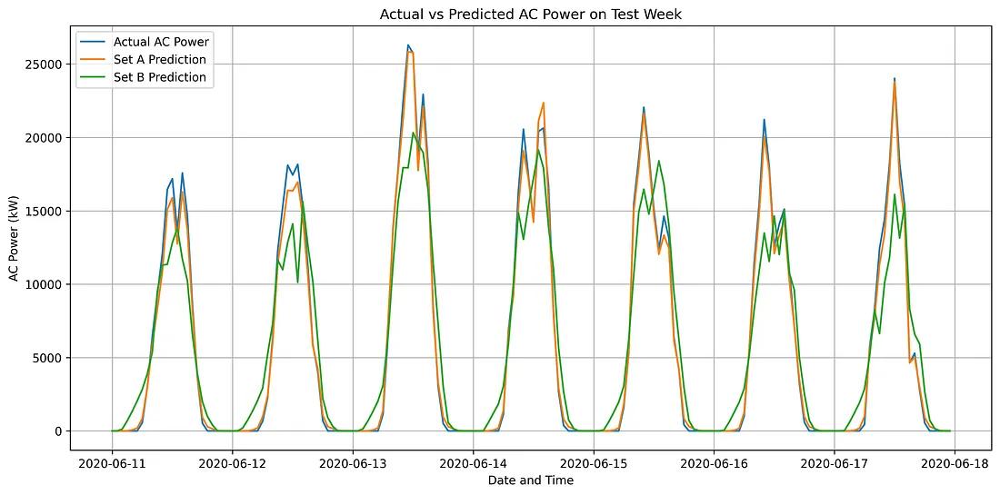
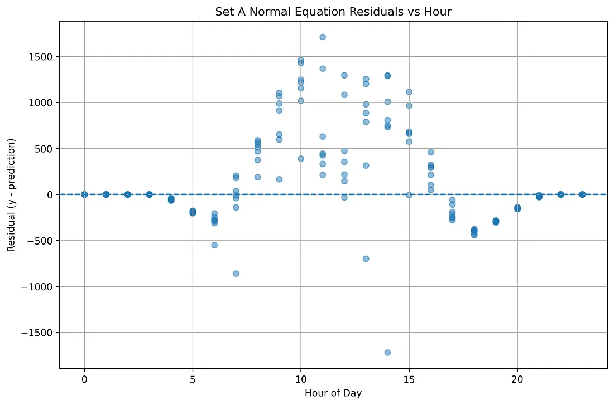

01 Introduction
Solar power generation changes continuously with sunlight, temperature, cloud conditions, and other environmental factors. Accurate prediction of solar plant AC power can help improve energy planning, monitoring, and operational decision-making.
In this project, I investigated an important question: Can nearby public weather data provide predictions comparable to measurements collected directly from the solar plant?
To answer this, I developed linear regression models using two different feature sets: one based on on-site plant sensors and another based on public weather data from Open-Meteo.
02 Dataset & Data Preparation
The project uses Plant 1 generation and weather sensor data. The generation data contains inverter-level AC power measurements, while the sensor data provides irradiation, module temperature, and ambient temperature.
Public weather information was obtained from the Open-Meteo API, including shortwave radiation, temperature at 2 metres, and cloud cover.
The data preparation process included:
- Merging generation and sensor data using timestamps
- Aggregating inverter-level generation to plant-level AC power
- Resampling the data to hourly intervals
- Checking and handling missing values
- Adding time-based features using sine and cosine transformations
- Standardizing features using statistics calculated only from the training data
03 Feature Sets
On-site Sensors
- Irradiation
- Module Temperature
- Ambient Temperature
- Hour sine
- Hour cosine
Public Weather
- Shortwave Radiation
- Temperature at 2 metres
- Cloud Cover
- Hour sine
- Hour cosine

This allowed a direct comparison between plant-specific measurements and nearby public weather information.
04 Machine Learning Methodology
I implemented linear regression manually using NumPy, without relying on machine-learning libraries for the core optimization.
Three approaches were evaluated:
Normal Equation
A direct analytical solution for the regression parameters.
Batch Gradient Descent
The model parameters were updated using the complete training dataset at each iteration.
Stochastic Gradient Descent
The parameters were updated using individual training samples, making it more suitable for very large datasets.
Stochastic Gradient Descent updates the parameters one training example at a time. Although its optimization path is more variable, it is more practical for very large datasets because it does not require the complete dataset for every update.


The data was split chronologically — Training: 15 May – 10 June 2020 | Testing: 11 June – 17 June 2020. No shuffling was used because the data is time-series data.
05 Results
The results showed a significant performance difference between the two feature sets.
Overall RMSE
| Model | Best Overall RMSE |
|---|---|
| Set A On-site Sensors | 539.46 kW |
| Set B Public Weather | 2572.66 kW |
Daytime RMSE (06:00–18:00)
| Feature Set | Daytime RMSE |
|---|---|
| Set A Sensors | 704.46 kW |
| Set B Public Weather | 3148.71 kW |
06 Why Did On-site Sensors Perform Better?
The main reason is that on-site sensors measure the actual conditions at the solar plant.
Public weather data represents conditions at a nearby geographical location. It may therefore fail to capture local effects such as:
This explains why the sensor-based feature set produced substantially more accurate predictions.
07 Actual vs. Predicted Power
The predicted and actual AC power values were also compared over the test week. The sensor-based model was able to follow the actual generation pattern more closely, while the public-weather model showed larger deviations.

08 Residual Analysis
The largest residuals were mainly observed between 10 AM and 3 PM, which corresponds to the period of high solar generation.
During these hours, rapid changes in irradiation and cloud conditions can cause the actual power output to differ from the linear model's prediction.
Other possible factors include temperature effects, shading, and inverter behaviour that are not fully represented by the simple linear regression model.
The residual analysis therefore suggests that the model performs best when the relationship between the input weather conditions and power output is relatively stable, while more complex conditions during peak generation hours can produce larger prediction errors.

09 Solver Comparison
For this relatively small dataset, the Normal Equation is a practical choice because it provides a direct solution without requiring many iterations.
However, for extremely large datasets, Stochastic Gradient Descent becomes more attractive because it processes individual samples and can scale better.
In this experiment, the Batch Gradient Descent parameters did not exactly match the Normal Equation solution after the selected number of iterations, showing that iterative optimization depends on learning rate and convergence.
10 Key Takeaways
On-site measurements matter.
Plant-specific sensor data produced substantially better predictions than public weather data.
Public weather data still has value.
It can be useful for preliminary estimates and remote forecasting when plant sensors are unavailable.
Model choice depends on dataset size.
Normal Equation is convenient for smaller datasets, while SGD is more suitable for very large datasets.
Solar power is highly sensitive to local conditions.
Clouds, irradiation changes, temperature, and micro-climate effects can significantly influence prediction accuracy.
11 Conclusion
This project demonstrates that replacing on-site solar plant measurements with public weather data can significantly reduce prediction accuracy.
The best sensor-based model achieved an RMSE of 539.46 kW, compared with 2572.66 kW for the best public-weather model.
Overall, the results show that on-site sensor measurements are substantially more reliable for accurate plant-level solar power prediction, while public weather data can serve as a useful secondary source for preliminary or remote estimation.
Project Repository
Solar Plant AC Power Prediction
Source code, notebooks, and Streamlit app for the full analysis.